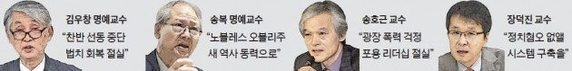

등록일 2017-03-02
'한국 사회, 어디로…' 대표 지성 4인의 고언
‘법치(法治)의 회복, 그리고 상대방에 대한 포용.’
김우창 고려대 명예교수(80), 송복 연세대 명예교수(80), 송호근(61)·장덕진(51) 서울대 사회학과 교수 등 좌우 진영을 아우르는 석학 네 명이 혼돈의 탄핵정국을 헤쳐나갈 해법으로 내놓은 화두다.
이들은 더 나은 한국 사회로 나아가려면 법치와 포용의 가치를 회복해야 한다고 강조했다. 24일 서울대 호암교수회관에서 열린 공동저서 출판기념회 겸 ‘박태준미래전략연구포럼’에서다. 《한국 사회, 어디로?》라는 책을 출간한 이들은 ‘더 나은 한국 사회가 되기 위해 한국인의 의식은 어떻게 바뀌어야 하나’를 주제로 발표했다.
한국 사회가 ‘물질주의’에서 벗어나지 못했다는 진단도 내렸다. 장 교수는 “한국 사회는 경제 성장에 따라 물질주의적 가치관이 강화되다 일정 시점이 지나면 환경주의, 양성평등 등 민주의식이 발전하는 보편적 패턴을 따르지 않은 유일한 경제협력개발기구(OECD) 국가”라고 말했다.
송복 명예교수는 “국민은 아직도 산업화시대 성공 모델에 젖어 대통령 1인 리더십에 기대고 있다”며 “우리가 창조할 새 역사의 동력은 노블레스 오블리주(높은 사회적 신분에 상응하는 도덕적 의무)”라고 말했다.
이들은 탄핵정국에 대한 고언(苦言)도 내놨다. 송호근 교수는 “탄핵정국에서 가장 걱정되는 건 나라가 두 쪽 나게 생긴 것”이라며 “차기 대통령이 누가 되든 보복의 정치가 아니라 분열된 한국 사회를 통합으로 이끄는 걸 최우선 국정 목표로 삼아야 한다”고 지적했다. 김 명예교수는 “결과가 어떻든 양측은 헌법재판소의 판결에 따르라”며 “그것이 진정한 법치의 회복”이라고 말했다.
황정환/구은서 기자
jung@hankyung.com
[출처]
https://www.hankyung.com/society/article/2017022460151

